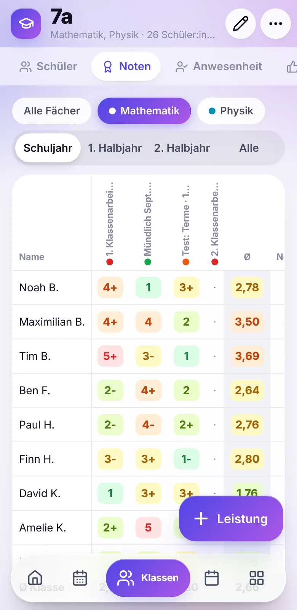
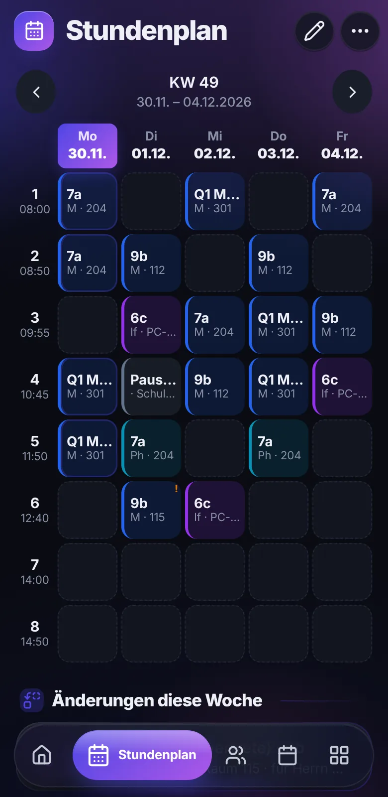
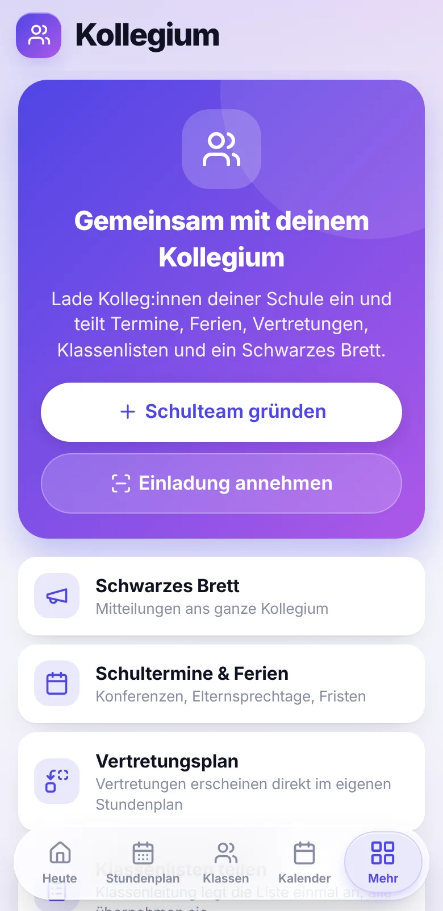

Android
Handys und Tablets
- Version
- 1.3.2
- Größe
- 0,4 MB
- Benötigt
- Android 7.0 oder neuer
- Datei
- Schulplan.apk
Prüfsumme (SHA-256)
5f09d88d05dec8dbab04ed72ea1694c37dbd6e6779ef4f6f017146bfaef0cd43Stundenplan, Klassen, Noten, Anwesenheit, Klassenbuch, Termine und das ganze Kollegium – in einer App für Handy und Computer. Deine Daten bleiben auf deinem Gerät.
Von der ersten Stunde am Montag bis zur Zeugniskonferenz: Schulplan sammelt, was du sonst in Heften, Listen und Zetteln verteilst.
Wochenansicht mit A/B-Wochen, Doppelstunden, Aufsichten, Ferien und Vertretungen. Die laufende Stunde siehst du sofort.
Profile mit Geburtstag, Elternkontakt und Merkmalen wie LRS oder Nachteilsausgleich. Listen per Einfügen oder CSV-Import.
Noten 1–6 mit Tendenzen oder Punkte 0–15, Gewichtung nach Kategorien, Notenschlüssel für Punkte, Notenspiegel und Zeugnisnote.
Fehlzeiten pro Stunde oder Tag – entschuldigt, unentschuldigt, verspätet – mit Statistik je Kind und Export für Excel.
Thema jeder Stunde, Hausaufgaben mit Kontrolle, Unterrichtsreihen mit Fortschritt und das Thema der letzten Stunde.
Kolleg:innen per QR-Code einladen. Schwarzes Brett, Vertretungsplan, gemeinsame Termine und geteilte Klassenlisten – verschlüsselt.
Morgens eine Tagesübersicht, kurz vor jeder Stunde Raum und Thema, dazu Prüfungen, Termine, Aufgaben und Geburtstage.
Zufallsauswahl, Gruppen bilden, Timer, Lautstärke-Ampel, Sitzplan, Notenschlüssel-Rechner und Würfel.
Keine Cloud-Pflicht, kein Konto, PIN-Sperre und tägliche Sicherungen auf dem Gerät. Schülerdaten verlassen dein Gerät nicht.



Wähle dein Gerät. Die Installation dauert etwa eine Minute; eine Schritt-für-Schritt-Anleitung hilft bei jeder Warnmeldung.
Handys und Tablets
5f09d88d05dec8dbab04ed72ea1694c37dbd6e6779ef4f6f017146bfaef0cd43PC und Laptop
95d87e3f4711e617d69d5487ebcbcc6aa29fab97b7bcad01b60dc2c8e585bff6MacBook, iMac, Mac mini
85a85b91b029a549372f3b0b67790a33ad05aaef4db6f04104836bf0cbca199cApple Silicon
4dfdbb6e39347457a2e0738aaff3c935e6f3a8ddbedbf203ce7dcd6560ed3041Intel
Auf „APK herunterladen“ tippen und den Download bestätigen.
Datei öffnen und „Apps aus dieser Quelle zulassen“ aktivieren.
„Installieren“ tippen, Schulplan öffnen, fertig.
Schulplan-Setup.exe herunterladen und doppelklicken.
Bei „Der Computer wurde geschützt“: „Weitere Informationen“ → „Trotzdem ausführen“.
Schulplan startet von selbst und liegt auf dem Desktop.
Passende Datei laden und doppelklicken.
Schulplan in den Ordner „Programme“ ziehen.
Rechtsklick → „Öffnen“ und bestätigen. Nur beim ersten Mal nötig.
Schulplan speichert alles lokal auf deinem Gerät. Es gibt keinen Schulplan-Server, der deine Klassen, Noten oder Notizen kennt.
Nein. Schulplan ist kostenlos, ohne Abo, ohne Werbung und ohne In-App-Käufe.
Die App wird direkt verteilt, damit sie ohne Konto und ohne Store-Gebühren auskommt. Deshalb fragt dein Gerät beim ersten Installieren einmal nach. Die Anleitung zeigt jede Meldung.
Ja. Daten überträgst du über eine Sicherungsdatei: am einen Gerät exportieren, am anderen wiederherstellen. Für das Kollegium gibt es zusätzlich einen verschlüsselten Abgleich.
Schulplan prüft selbst auf neue Versionen. Unter Android und Windows genügt ein Tipp auf „Aktualisieren“, am Mac lädt die App die neue Version in deinen Download-Ordner. Deine Daten bleiben dabei erhalten.
Deine Daten liegen nur auf dem Gerät. Exportiere deshalb regelmäßig eine Sicherung (Mehr → Datensicherung) und bewahre sie sicher auf. Mit einer PIN-Sperre kann niemand Fremdes die App öffnen.
Noch nicht. Am Computer kannst du die Windows- oder Mac-Version nutzen.